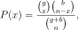
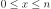
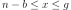

numpy.random.RandomState.hypergeometric¶
method
-
RandomState.hypergeometric(ngood, nbad, nsample, size=None)¶ Draw samples from a Hypergeometric distribution.
Samples are drawn from a hypergeometric distribution with specified parameters, ngood (ways to make a good selection), nbad (ways to make a bad selection), and nsample (number of items sampled, which is less than or equal to the sum
ngood + nbad).Note
New code should use the
hypergeometricmethod of adefault_rng()instance instead; see random-quick-start.- Parameters
- ngoodint or array_like of ints
Number of ways to make a good selection. Must be nonnegative.
- nbadint or array_like of ints
Number of ways to make a bad selection. Must be nonnegative.
- nsampleint or array_like of ints
Number of items sampled. Must be at least 1 and at most
ngood + nbad.- sizeint or tuple of ints, optional
Output shape. If the given shape is, e.g.,
(m, n, k), thenm * n * ksamples are drawn. If size isNone(default), a single value is returned if ngood, nbad, and nsample are all scalars. Otherwise,np.broadcast(ngood, nbad, nsample).sizesamples are drawn.
- Returns
- outndarray or scalar
Drawn samples from the parameterized hypergeometric distribution. Each sample is the number of good items within a randomly selected subset of size nsample taken from a set of ngood good items and nbad bad items.
See also
scipy.stats.hypergeomprobability density function, distribution or cumulative density function, etc.
Generator.hypergeometricwhich should be used for new code.
Notes
The probability density for the Hypergeometric distribution is

where  and 
for P(x) the probability of
xgood results in the drawn sample, g = ngood, b = nbad, and n = nsample.Consider an urn with black and white marbles in it, ngood of them are black and nbad are white. If you draw nsample balls without replacement, then the hypergeometric distribution describes the distribution of black balls in the drawn sample.
Note that this distribution is very similar to the binomial distribution, except that in this case, samples are drawn without replacement, whereas in the Binomial case samples are drawn with replacement (or the sample space is infinite). As the sample space becomes large, this distribution approaches the binomial.
References
- 1
Lentner, Marvin, “Elementary Applied Statistics”, Bogden and Quigley, 1972.
- 2
Weisstein, Eric W. “Hypergeometric Distribution.” From MathWorld–A Wolfram Web Resource. http://mathworld.wolfram.com/HypergeometricDistribution.html
- 3
Wikipedia, “Hypergeometric distribution”, https://en.wikipedia.org/wiki/Hypergeometric_distribution
Examples
Draw samples from the distribution:
>>> ngood, nbad, nsamp = 100, 2, 10 # number of good, number of bad, and number of samples >>> s = np.random.hypergeometric(ngood, nbad, nsamp, 1000) >>> from matplotlib.pyplot import hist >>> hist(s) # note that it is very unlikely to grab both bad items
Suppose you have an urn with 15 white and 15 black marbles. If you pull 15 marbles at random, how likely is it that 12 or more of them are one color?
>>> s = np.random.hypergeometric(15, 15, 15, 100000) >>> sum(s>=12)/100000. + sum(s<=3)/100000. # answer = 0.003 ... pretty unlikely!